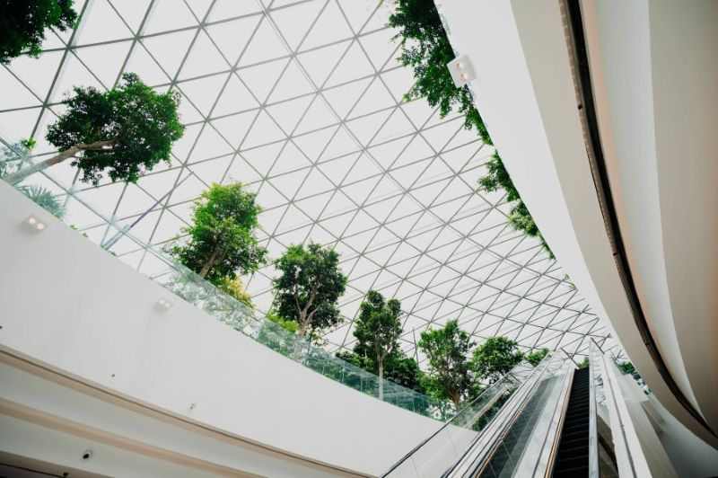

Arquitectura Sostenible
Exploramos las últimas tendencias en arquitectura sostenible y cómo están redefiniendo el panorama constructivo mundial. Desde materiales eco-friendly hasta diseños que minimizan el impacto ambiental.
Leer Artículo Completo